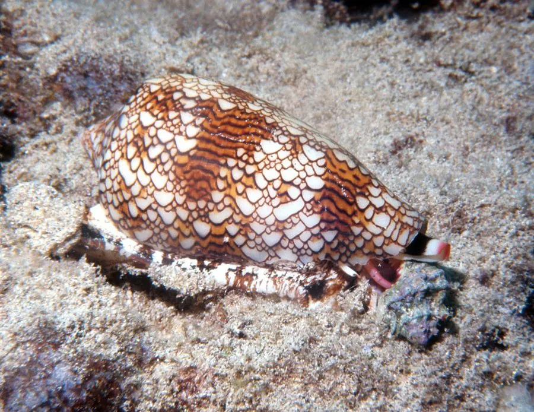

软体动物 · 动物界
织锦芋螺 Conus textile

壳面花纹如织锦的暖海芋螺，用带毒箭齿的吻部捕食，毒液可致人中毒，是芋螺家族中著名的剧毒种类之一。
- 分类
- 门软体动物门纲腹足纲目新腹足目科芋螺科属芋螺属
- 栖息环境
- 印度洋—太平洋热带珊瑚礁的沙底和礁石间，水深 1–30 m，夜行性
- 地理分布
- 印度洋—太平洋热带海域，从东非、红海到日本南部、澳大利亚和夏威夷，中国南海及台湾周边有分布
- 保护级别
- 暂无评估；中国未列入国家重点保护野生动物名录
物种志
织锦芋螺的贝壳呈纺锤形，壳面有褐色、黄色和白色交织的网状花纹，像织锦一样，因此得名。壳口狭长，软体藏在壳内，吻部可以伸出。壳长一般 5–10 cm，在芋螺中属于中等大小。
织锦芋螺分布于印度洋—太平洋的热带珊瑚礁，从东非、红海到日本南部、澳大利亚和夏威夷，中国南海及台湾周边有分布。它栖息于礁区沙底，水深 1–30 m，多在夜间活动。织锦芋螺是肉食性动物，用特化的箭齿和毒腺捕食蠕虫、其他软体动物和小鱼：它把像注射器一样的箭齿刺入猎物体内，注入毒液使其麻痹。芋螺毒液是复杂的神经毒素混合物，织锦芋螺的毒性较强，被刺后可能出现麻木、呼吸困难等症状，严重时危及生命，需要及时就医。目前它没有IUCN 的正式评估，中国未将其列入国家重点保护野生动物名录。
形态与习性
- 食性肉食性，捕食蠕虫、其他软体动物和小鱼
- 壳长一般 5–10 cm
- 毒性毒液为神经毒素混合物，被刺后可能麻木、呼吸困难
- 栖息深度珊瑚礁区，水深 1–30 m
- 繁殖雌雄异体，交配后产下卵囊
- 习性多在夜间活动，用箭齿和毒腺捕食
趣味知识
- 织锦芋螺的壳面花纹像织锦，因此得名。
- 它捕食时用一根带毒的“箭齿”刺入猎物并注入毒液。
- 芋螺毒液中的肽类物质被用于开发镇痛药物。